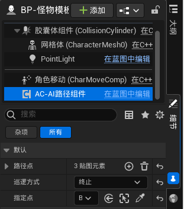
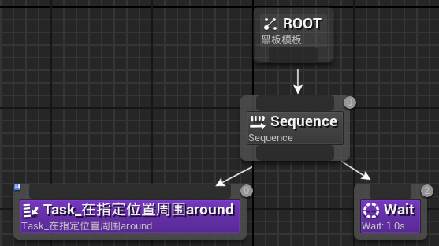

AI寻路我们通过给他增加巡路点来实现。同时可以让AI根据寻路点的位置进行周围游荡。
创建Actor类蓝图，命名为BP_定位点。加上静态网格体组件和设置材质即可。然后修改碰撞为NoCollision。
为了让AI能够找到定位点，我们用组件来做。这样做的好处是可以灵活配置。
创建ActorComponent类蓝图，命名为AC_AI路径组件。
创建变量，命名为“路径点”，类型为BP_定位点的映射，值类型为float。我们将值表示为AI在该点的停留时间，默认值为0。
创建变量，命名为“指定点”，类型为BP_定位点的对象引用。
创建变量，命名为“巡逻方式”，类型为E_巡逻方式。巡逻方式有三种：循环、往返、终止。
上面的三个变量都是可编辑实例，没有生成时公开。
接下来实现路径的选择。在场景中添加定位点和敌人模板，在敌人模板中添加AC_AI路径组件。在场景中点击AI，找到细节中的该组件，在细节中给路径点赋值。
创建行为树，命名为“行为树模板”。新建任务，继承自BTTask_BlueprintBase，命名为Task_按照既定路径巡逻。
重载函数“接收执行AI”，这里ControlledPawn即为控制的AI。我们从AI中Get Component By Class，这样就能设计路径点的赋值。
创建变量，命名为“当前路径点索引”，来记录。
创建自定义事件，命名为“移动到目标点”。
这里GET（a copy）的返回值即为场景中定位点的实例。这时我们拿到他就可以获取到他的位置，就可以让AI走过去了。
为了实现当AI移动到目标点经过values值的时间后再继续移动，我们用SetTimerByEvent。注意定时器的时间不能为0，所以选择Find值和0.01中的最大值。
这时，索引值可能会越界，所以要在索引值++的时候加一个判断
这样就实现了循环的巡逻
接下来实现另外两种巡逻：往返、终止
问题的关键是定位点索引值怎么变。当往返的时候，索引值是-1，而不是+1。这里我们不用+-1来实现，我们用方向正负来实现。
创建int型变量，命名为“路径方向”，默认值为1。这时，我们需要修改“当等待结束之后”对当前路径索引加上路径方向。
同时我们也需要判断路径点中的某个索引值是否合理，在事件图表中创建下面三个节点，折叠为函数，命名为“路径点索引值是否合理”，纯函数。
在使用该功能的时候，选择场景中的AI选择AC_AI路径组件在细节中选择需要的寻路方式和定位点即可。
在AC-AI路径组件中创建变量，命名为“指定点”，类型为BP-定位点的对象引用，勾选可编辑实例，不勾选生成时公开
现在在场景中选择目标AI，在细节中找到他的AC-AI路径组件，在场景中选择，在细节中找到默认，给指定点赋值
选择右边的吸管，然后在场景中选择目标定位点即可。
然后实现Task_在指定位置周围around
然后在行为树中简单实现一下即可
